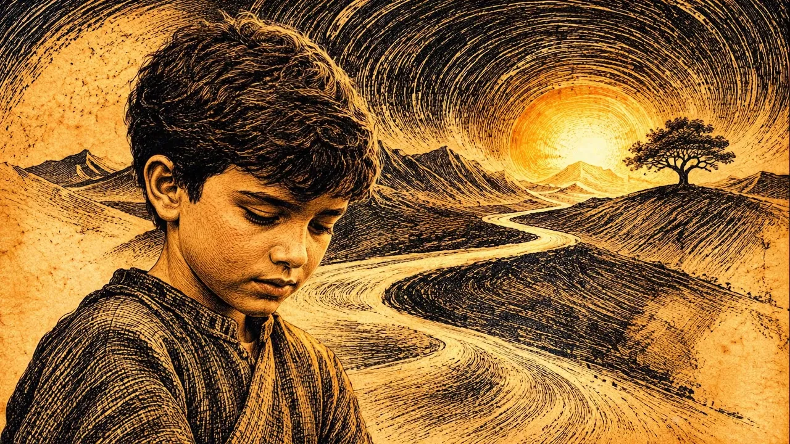

7a — rasm (ChatGPT), 16:9 (yotiq): bola quyosh tomondan keladi
Biriktiring:

Nima bo'ladi
Klip boshi: kichkina bola uzoqda, quyosh oldida, yashil rangsiz oddiy yo'lda, yuzi bizga qaragan — kameraga qarab yura boshlaydi. ChatGPT'ga ref_bola.jpg ni biriktiring.
Horizontal 16:9 image. Use the attached image as the reference: keep exactly its drawing style, colours and landscape (detailed engraved ink etching on warm sepia-gold paper with fine hatching, swirling dark ink sky, a big glowing setting sun with a lone tree on the hill on the right, a plain winding sepia dirt path through the hills) and the same little boy (about 7 years old, short messy brown hair, simple brown rough-cloth tunic, brown trousers, small leather shoes). Remove the boy from the front: now he is FAR AWAY on the plain dirt path, very small in the frame, just in front of the sun, walking TOWARD the viewer: we see his front, his face turned to us, one foot stepping forward. The path is plain sepia ink with no green colour and no glow anywhere. The path starts at the bottom left of the frame near the viewer and winds back to him and the sun. Wide shot, the camera low near the path. Only 2 colours: sepia gold and dark ink brown. No ring or circle of light above or behind his head, no glow outline around him, no text, no letters, no watermark.